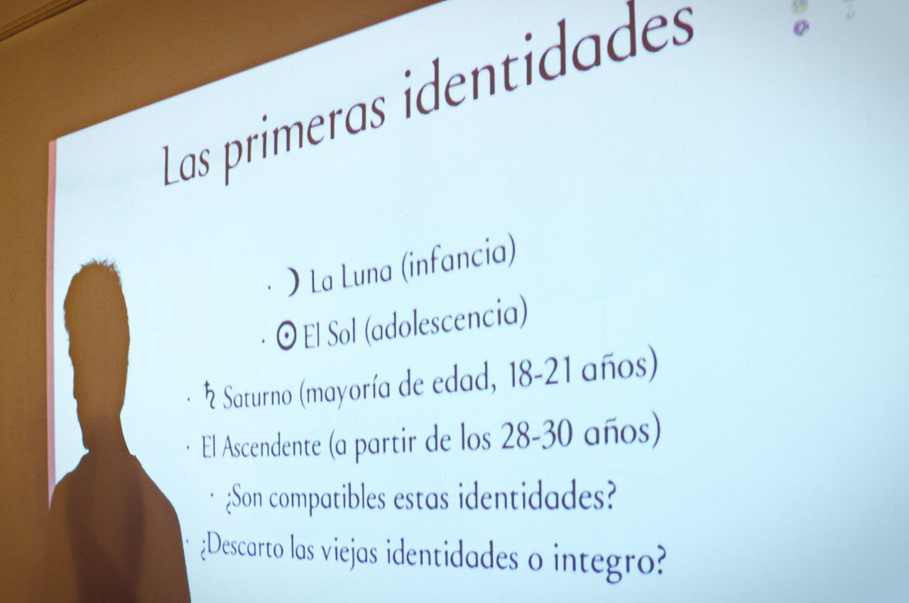

El docente a cargo de los cursos y seminarios es Leandro Liptak, astrólogo fundador de
Venus Saturno Astrología. Leandro se vinculó a la informática desde
muy temprana edad y estudió Ciencias de la Computación. Trabajó en un área
interdisciplinaria de la computación vinculada a la lingüística, conocida como
lingüística computacional (LC) o procesamiento del lenguaje natural (NLP).
Si bien
sus inquietudes metafísicas se remontan a sus primeros años, su interés por la
astrología, la meditación y el trabajo corporal se despertó luego de una profunda crisis
en 2010. Poco después comienza su estudio de astrología junto a la astróloga Marta
Cabaleiro, continuando luego en forma autodidacta pero muy vinculado a colegas
estudiantes o ya recibidos de la escuela de astrología Casa XI. En 2014 conoce la
meditación Vipassana y en 2015 pasa nueve meses viviendo en centros de meditación.
En 2016 comienza a dar talleres y seminarios de astrología en forma regular.
Es además profesor de hatha-yoga y aficionado guitarrista y compositor.
Sesiones
Carta natal
Trabajar en una o varias sesiones con la carta natal es una poderosa forma
de acceder a lo que podríamos llamar la dimensión del Ser de una persona;
aquel lugar donde residen todas sus potencialidades aún inmanifiestas. Así,
se explora cómo la persona está actualmente llevando adelante su vida y qué nuevos
movimientos pueden proponerse para acompañar de forma más fiel todo lo que esa
persona es y así, puede llegar a manifestar. El estudio de la carta natal
de una persona involucra el estudio de sus tránsitos, es decir, el estudio
de su momento actual como punto de partida para el análisis de los subsiguientes pasos
en su despliegue energético.
Revolución solar
La sesión de análisis de la revolución solar consiste en estudiar el contexto
de despliegue anual de una persona, desde el momento de su cumpleaños. Esto requiere
que la persona ya haya realizado al menos una sesión con su carta natal, o que lleve
a cabo una sesión de mayor duración para hacerlo todo en forma conjunta.
Galería de fotos
Algunas de las siguientes fotos fueron tomadas durante un
Taller Inicial de un mes, y otras durante la charla abierta
"Claves de la Carta Natal".

Cursos y seminarios
A continuación te contamos qué cursos solemos brindar de forma regular.
Curso de 3 meses
La formación está dirigida a todos aquellos que quieran introducirse al conocimiento
de la astrología, no como un saber estático, sino como un sistema de pensamiento y de
aprendizaje transformacional: estudiar astrología forzosamente comienza a
transformar el tipo de observador que somos en el mundo, y esto aporta claves para la
resolución de nuestros conflictos personales e interpersonales. Del mismo modo, el
conocimiento en este área puede resultar sumamente nutritivo para complementar
diversas actividades profesionales, ya sea en el campo de la educación, la salud, la
terapia psicológica u holística, el arte o las comunicaciones, entre tantas otras.
Al finalizar la formación, el egresado contará con un conocimiento del lenguaje
simbólico que hace a la astrología, y tendrá herramientas para reflexionar sobre los
interrogantes que la disciplina plantea. Poseerá también una base práctica para
abordar el estudio de cartas natales.
Taller inicial
Es un taller de 4 encuentros en el cual te introducimos rápida y directamente
al corazón de este idioma, esta forma de ver la realidad. En cada encuentro
trabajamos uno de los núcleos fundamentales, de los componentes principales del
lenguaje. Es decir:
Cada clase tiene un gran contenido teórico, pues es mucho lo que hay que transmitir
(y poco el tiempo), pero además hay práctica y se dan técnicas para poder comenzar
a trabajar por tu cuenta, con tu carta natal y las de los demás. La idea es que
reúnas al cabo de 4 encuentros las suficientes herramientas como para poder comenzar
a jugar con la astrología por tus propios medios; y seguir profundizando desde allí.
Clases particulares
Las clases particulares son una forma ideal de estudiar astrología adaptado a
tus tiempos y necesidades. En general trabajamos en clases de entre una hora y dos
de duración. Existe también la modalidad online para quienes estén en lugares
geográficos más lejanos o quienes por horarios o comodidad prefieran tomar las
clases sin moverse de su hogar.
Contacto
Próximos eventos
Te recordamos que para inscribirte lo hacés a través de nuestro
sistema de inscripciones salvo que se
indique otro medio específico.